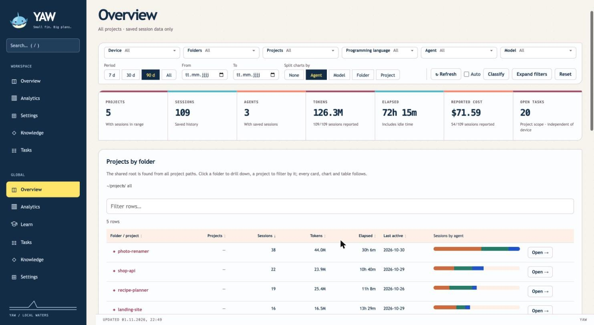
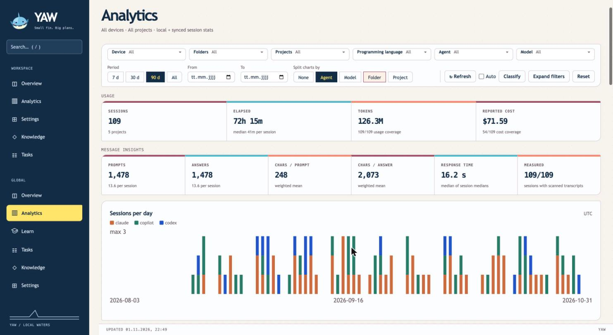
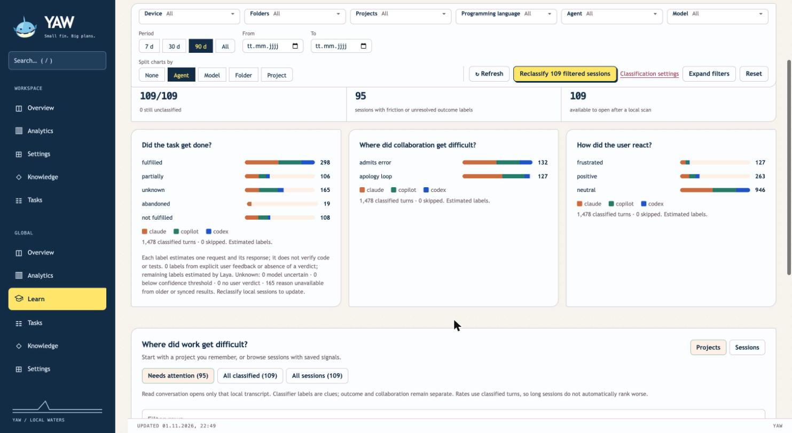
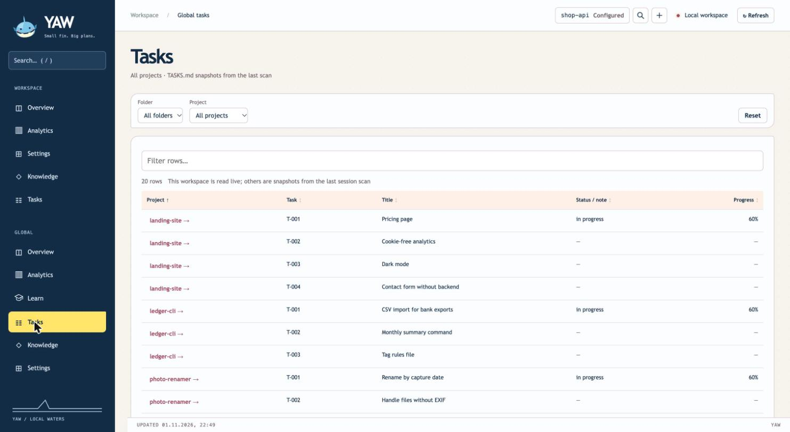
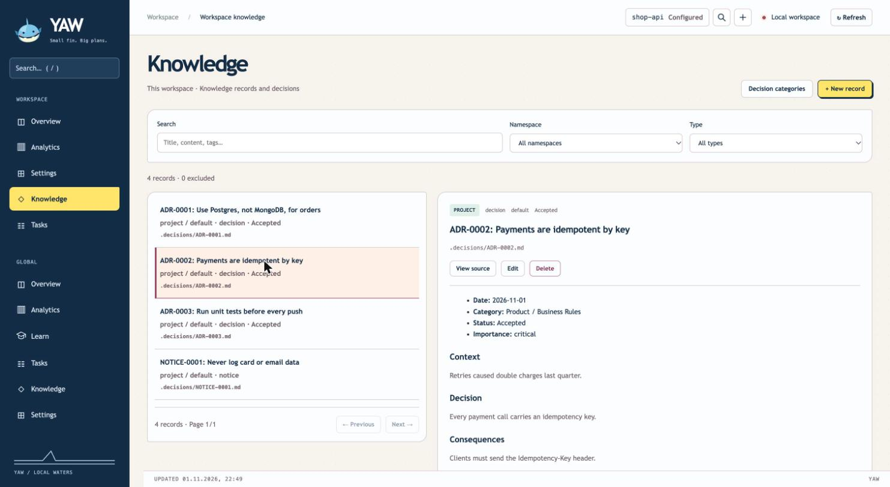
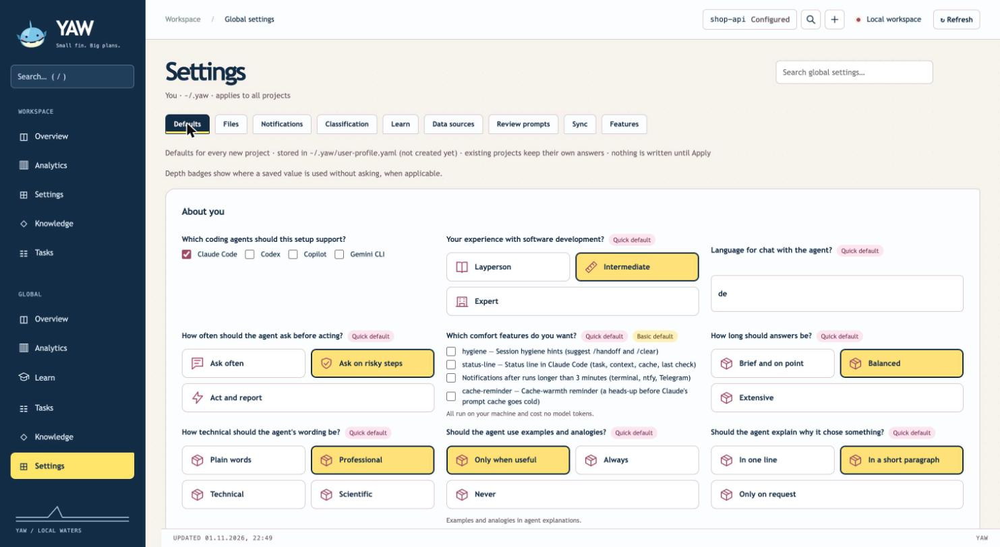
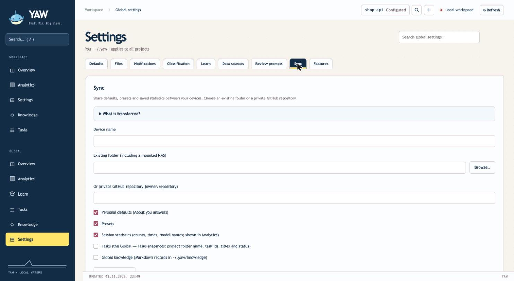
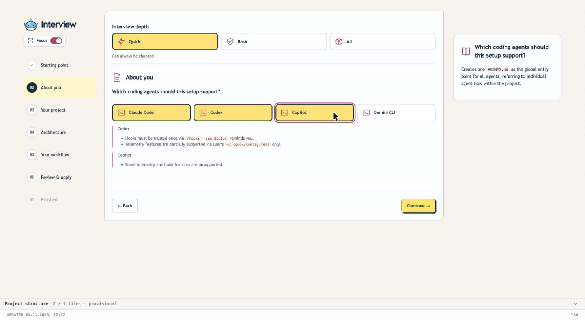
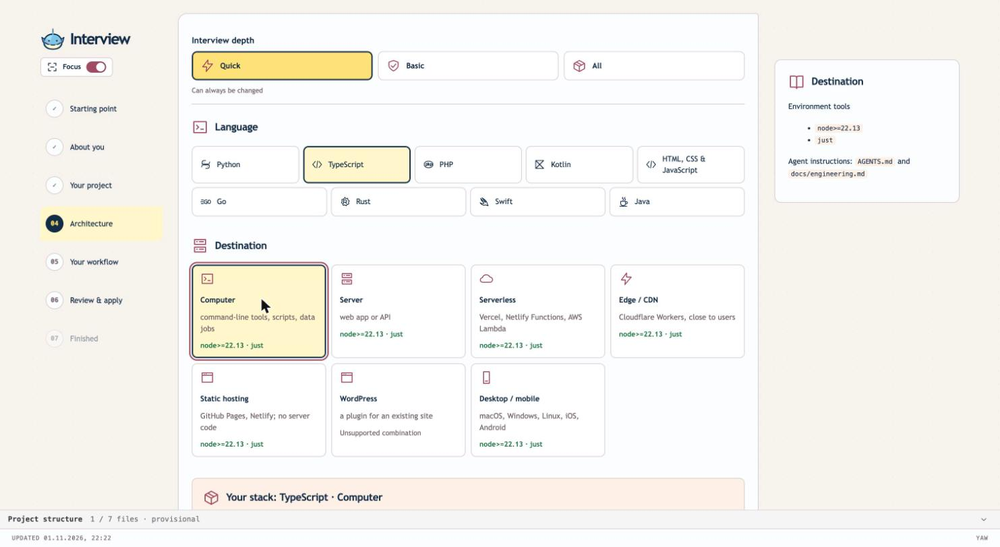
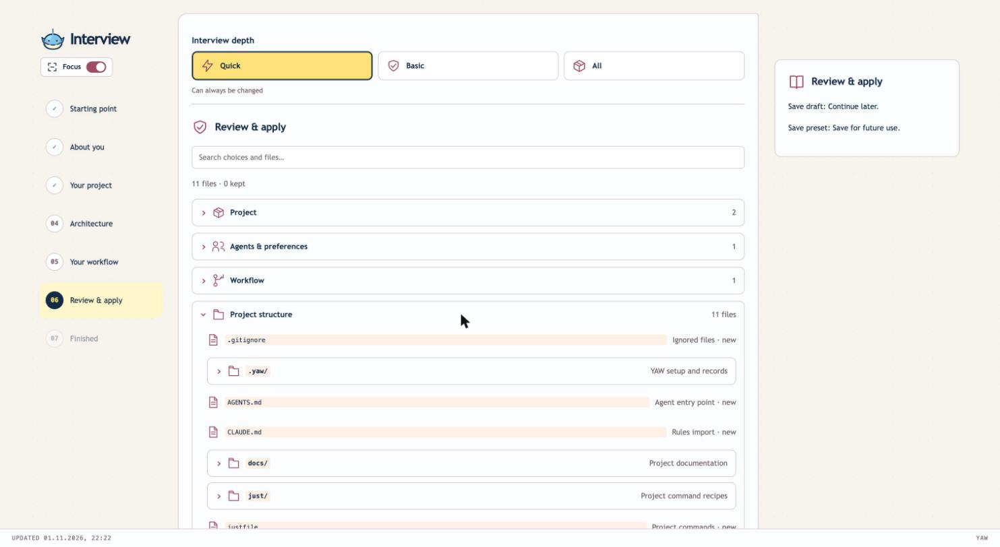

Define once how your agents talk to you, how they code, and which skills, hooks and checks they use. Any language, any stack. Switch agents; your setup stays.
From idea to MVP in one sitting, or a full product with the gates a dev team has.
Plain files in your repo. No lock-in.
Tokens, tasks, sessions and decisions in one local dashboard.
curl -fsSL https://raw.githubusercontent.com/nickyreinert/yaw/main/install.sh | bash -s -- --channel main
Then in your project: yaw init · macOS, Linux, Windows via WSL · Node.js 22.13+, Git

Global overview with demo data: projects, tokens, cost, open tasks.
WHAT IS YAW
Define. Run. Learn.
1
Define once
Your communication style, coding standards, skills, hooks, review gates and knowledge live in one place, on your machine.
2
Run any agent
YAW writes that setup into each project as plain files. Claude Code, Codex, Copilot CLI and Gemini CLI read the same rules.
3
Watch and improve
The dashboard shows tokens, cost, tasks and decisions across projects, and shows where agents got stuck, so you can fix the cause.
WHY YAW
Agents start every session from zero.
You explain how to run the tests, how you want answers, what was decided last week. Again. And every agent has its own place for that. YAW makes it one.
No blank starts. Rules, commands, next task and past decisions are files in the repo. A new session reads them.
No bloat. You pick modules; only those are installed. Zero runtime dependencies.
No lock-in.AGENTS.md, a justfile, TASKS.md, Markdown records. Change agent and take it all with you.
Team-grade quality, solo. Review agents, pre-commit and pre-push gates, CI, decision records: switch them on per project.
You stay in control. A diff is shown before anything is written. Your edits survive updates. Everything runs locally.
WHAT IT DOES
Everything in one place.
15 modules, 30+ stack profiles. Each line is one feature; switch on only what you need.
How your agent works with you
Answer length, register, examples, explanations, your experience level
How often it asks before acting
Chat language separate from code language
Claude output style generated from your choices
Personal defaults, applied to every new project
Presets for different kinds of work: save, load, rename
Any agent, any stack
Claude Code, Codex, Copilot CLI, Gemini CLI
One AGENTS.md as entry point; thin per-agent files
Compatibility matrix per agent: yaw agents
Adapter drift check when an agent's config changes
CLI, web app, serverless, edge, mobile, WordPress: 30+ profiles
From idea to MVP
Quick, Basic or All interview; terminal or browser form
yaw kickoff: architecture, data model, UI/UX foundations
Import the plan as tasks with model tier and effort
Tasks in TASKS.md, GitHub issues, or both
Project commands as just recipes; setup and check run on apply
Local .env handling; Docker files when the stack uses them
Code map of your repo for faster orientation
Quality gates, like a dev team
Review agents: quality, business logic, UI/UX, feature fit, security
Pre-push gate that warns or blocks
Pre-commit: format, lint, secret scan for every agent and for you
GitHub Actions quality gate, history scan, Dependabot
Workflow rules: no change without an issue; PR must link one
Coding, testing, review and git standards as a doc
Edit what each reviewer is told, per project or for all
Safety
Agents cannot read .env and secret files
Destructive commands are guarded: rm -rf, force push, prod deploy
Secrets are entered by you, never by the agent
Diff and explicit Apply before any write
Guarded GitHub actions need your confirmation
Dashboard is loopback only; no message text is stored
Memory that travels
Decision records and security, privacy and business-logic notices
Relevant decisions recalled at task start, with a note per prompt
Project knowledge and personal global knowledge in Markdown
Search and edit in the CLI or the dashboard
Skills for GitHub issues and epics, and for session handoff
Find the conversation behind a task, commit or file
Control room
Global overview: projects, sessions, tokens, cost, open tasks
Analytics: duration, prompts, response time, tokens by model
Filter by device, folder, project, language, agent, model, period
Split every chart by agent, model, folder or project
Tasks and knowledge across all projects
Browse and edit the files YAW wrote; settings with diff preview
Every view is a bookmarkable address
Learn from your sessions
Did the agent finish the task? Outcome per session
Where it went wrong: misunderstood intent, wrong scope, broke something
Frustration and apology-loop signals
Read the conversation with corrections highlighted
One-click review prompt: in your browser chat or your agent CLI
Local classification; suggestions are never applied automatically
Anywhere you work
Sync defaults, presets, stats and knowledge across devices: folder, NAS or private repo
Server mode: run a host on your LAN, start projects from a client
Run headless on a server; drive it with Claude Remote Control
Telegram message when a long run ends
Control remote sessions from Telegram: approve, deny, stop
Claude status line: task, context, cache, last check
Let an agent run the setup through a local API
THE CONTROL ROOM · yaw web
See what your agents did, what it cost, and what to fix.
All screenshots show demo data: five fictional projects, 109 sessions.
Analytics
Tokens, cost and time per agent, model or project
Session length and response time
The filter bar collapses to two rows while you scroll

Learn
Was the task done? Where did it get difficult?
Sessions that need attention, first
Turn a bad session into a better rule

Tasks across projects
Every project's TASKS.md in one list
Progress and resume points
Jump into any project from here

Decisions and knowledge
Architecture decisions, risks, notes
Agents recall them before they start
Edit in the browser or as Markdown

Your defaults
How the agent talks to you
Applied to every new project
Saved as presets for different work

Sync your devices
Folder, NAS or private GitHub repo
Choose what travels: defaults, presets, stats, tasks, knowledge
Statistics merge by device name

HOW IT HELPS
Same tool whether you code daily or just started.
New to coding agents
Answer a form in your browser. Describe your idea in plain words.
Pick Quick: five questions, sensible defaults.
Choose "Layperson": answers come in plain words.
Read the list of files. Nothing is written until you press Apply.
Safety guards are on by default.
Change your mind later; the setup reopens as a form.
Running agents every day
Compose modules per repo: yaw add review, yaw remove sessions.
Everything has a just recipe and runs headless.
Claude Code and Codex on one repo, one source of truth.
Gates before commit, before push and in CI.
Audit tokens, cost and where agents got stuck.
Run it on a server; check in from Telegram.

Pick your agents. Hints say what each one supports.

Pick language and destination. YAW lists the tools needed.

Review every file before it is written.
NO LOCK-IN
Your customisation is a folder of text files.
This is what YAW put in AGENTS.md for a demo project. Any agent that reads AGENTS.md follows it.
# AGENTS.md
## Project
- Purpose: A small CLI that renames photo files by EXIF date.
- Stack: node-cli, zero dependencies, node --test
## Working agreement
- Ask before risky steps; otherwise act.
- Give balanced answers: the result first, then the reasoning.
- Keep changes small; do what was asked, no more.
- Run `just check` before you report a task as done.
- Never read, print or commit secrets.
## Tasks
- Work through `just task` (list, next, start,
log, done, new). Done = implemented + `just check`
green + reviewed.
Edit it. It's yours. YAW keeps your edits when it updates.
Commit it. Teammates and CI see the same rules.
Move it. Swap Claude Code for Codex, Copilot or Gemini; rules, commands and tasks come along.
Remove it.yaw remove <module> deletes exactly the files that module added.
GET STARTED
Two commands.
# install
curl -fsSL https://raw.githubusercontent.com/nickyreinert/yaw/main/install.sh | bash -s -- --channel main
# in your project
cd your-project
yaw init # or: yaw init --web
yaw web # the control room